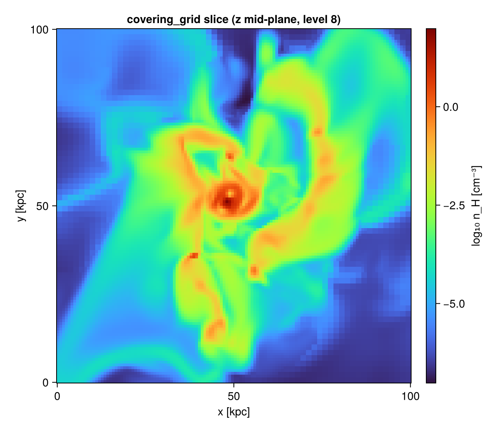

Covering Grid / Fixed-Resolution Buffer
covering_grid resamples the sparse AMR leaf cells onto a dense, uniform Nx×Ny×Nz array at a chosen refinement level — every output cell sampled, not integrated (unlike projection, which sums along a line of sight). slice is the 2-D, single-cell-thick version (a fixed-resolution buffer through a plane).
Use it to feed analyses that need a regular grid: power spectra, FFTs, structure functions, volume rendering / VTK export, machine-learning inputs, or simple array-style indexing.
covering_grid and slice operate on the AMR cell datasets — hydro (gethydro), gravity (getgravity), and radiative transfer (getrt) — which carry cell indices and refinement levels. They are not defined for particles (getparticles, which are point masses, not cells) or clumps; passing one raises a clear MethodError. To grid particles, deposit them with projection instead.
AMR stores cells only where the simulation refined; a covering grid fills every cell at the target level. Resampling a sparsely-refined region to its finest level can blow up the cell count by orders of magnitude. Always estimate the size with covering_grid_memory before building — and covering_grid itself refuses to allocate past max_bytes (default 4 GB).
Estimate the memory first
gas = gethydro(getinfo(output, path)) # e.g. AMR lmin 3 … lmax 7
covering_grid_memory(gas, [:rho, :T]; lmax=7)
# covering_grid memory estimate:
# level 7 dims (128, 128, 128) (2097152 cells × 2 var(s))
# per array : 16.8 MB
# result : 33.6 MB
# peak build: 50.3 MB
# AMR cells : 590311 blow-up ×3.553The returned NamedTuple has dims, ncells, bytes_per_array, result_bytes, peak_bytes (the construction high-water mark — nvars + 1 arrays, since one geometric weight grid is shared), and the blowup factor (output cells ÷ AMR cells). Pass an InfoType to size a grid before even reading the data (then the AMR-relative blowup is missing).
Build the 3-D grid
cg = covering_grid(gas, [:rho, :T], [:nH, :K]; lmax=7) # units optional (default: code units)
cg[:rho] # the 128×128×128 array, n_H in cm⁻³
cg.cellsize # physical cell size (pos_unit)
cg.extent # [x0,x1,y0,y1,z0,z1] (pos_unit)Restrict to a sub-box (in any unit) and the grid is built only there — much cheaper:
cg = covering_grid(gas, :rho; lmax=10, center=[:bc],
xrange=[-2,2], yrange=[-2,2], zrange=[-1,1], range_unit=:kpc)Resampling rule (volume-conservative). A leaf coarser than the target level is replicated to fill the block of output cells it covers; leaves finer than the target are volume-averaged down. Because the AMR leaves tile space, Σ value·volume is preserved exactly at any target level — covering_grid of :rho conserves total mass whether you up- or down-sample. Output cells that fall outside the data are NaN.
2-D slice (FRB)
sl = slice(gas, :rho, :nH; slice_axis=:z, slice_pos=0.5) # mid-plane n_H cut
sl[:rho] # a 2-D array (single-cell-thick, non-integrated)slice_pos is in slice_unit (:standard ⇒ a fraction of the box). The slice equals the corresponding layer of the full covering grid, but only that layer is built. slice_axis may be :x, :y, or :z; grid[var] is then a 2-D array. Note that result.extent keeps all six bounds [x0,x1,y0,y1,z0,z1] (the collapsed axis spans one cell), so you always know where the slice sits in 3-D.

API
The functions (covering_grid, covering_grid_memory, slice) and the result type CoveringGridResult are documented in the API reference.